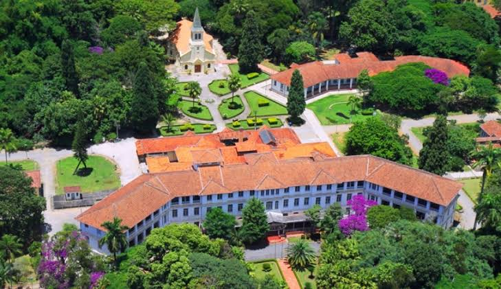

Parque Vicentina Aranha
História e lazer
O parque ocupa o antigo Sanatório Vicentina Aranha, construído no início do século XX para tratar pacientes com tuberculose.
Hoje é um espaço de lazer com áreas verdes, construções históricas e eventos culturais, ótimo para caminhadas e piqueniques.
